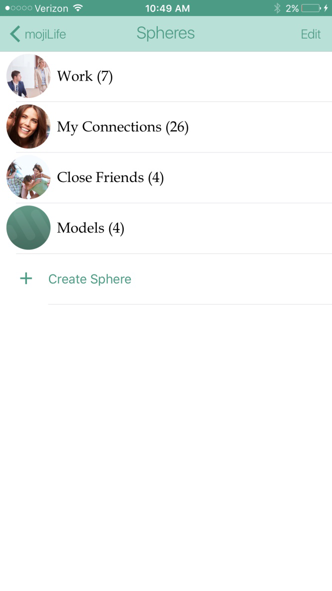
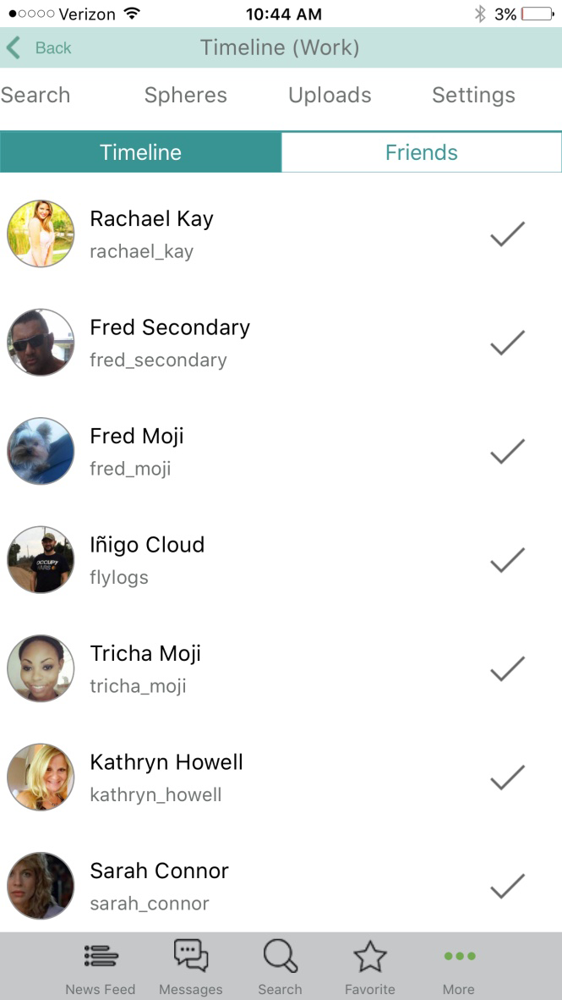
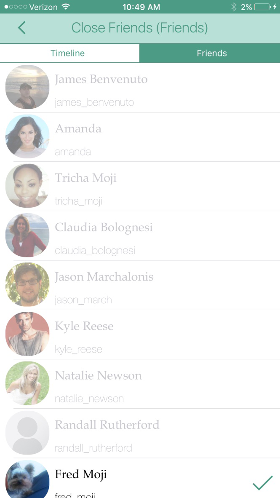
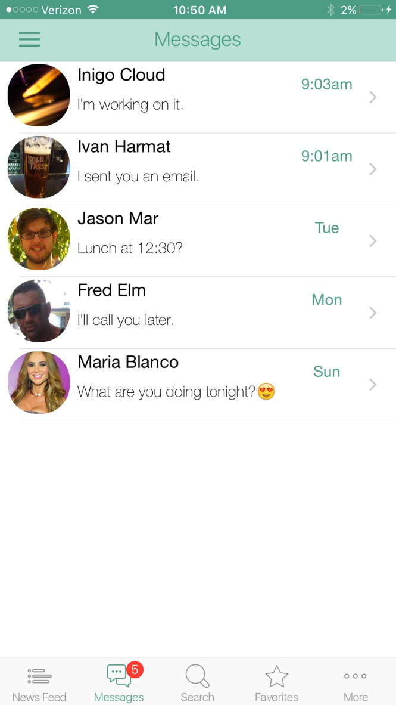
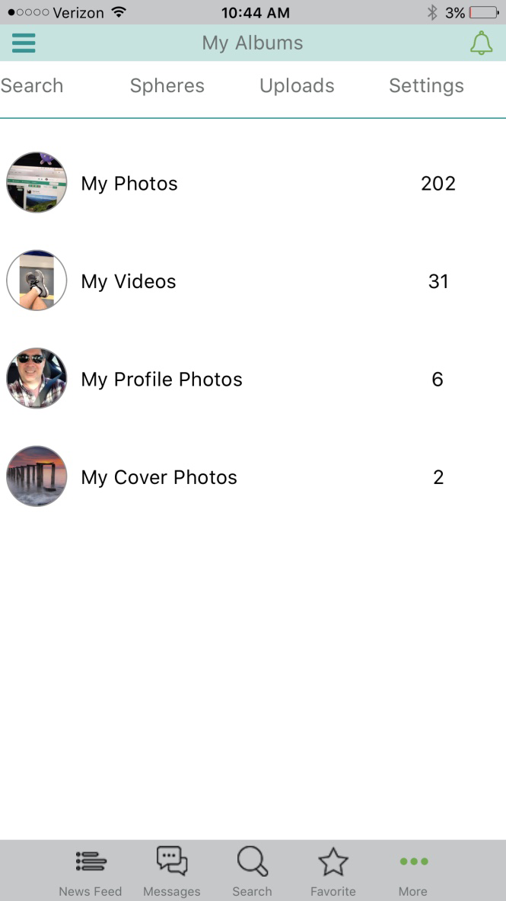
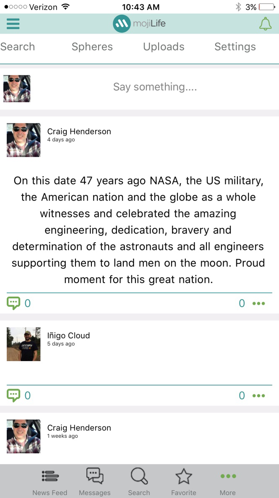
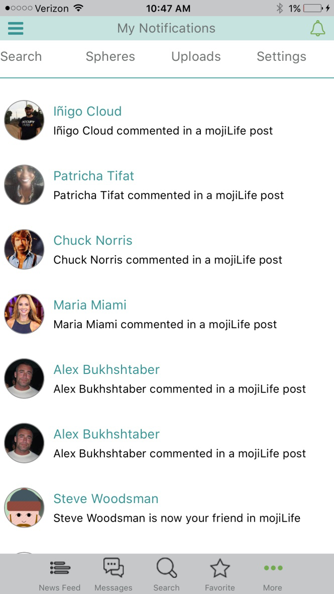
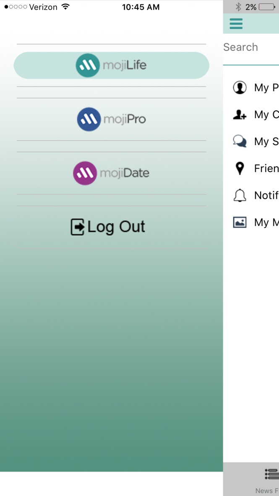
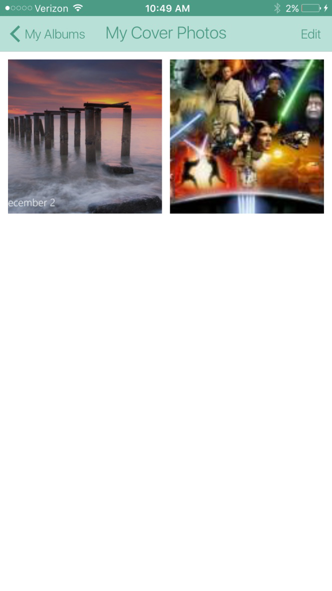

One identity, kept in its own worlds. Moji is a social network built on spheres — so your Life, your Work and your Dating never bleed into each other.
mojiLife · mojiPro · mojiDate
Friends and family — the people who know the real, off-the-clock you.
Colleagues, clients and connections — a professional face kept strictly its own.
Matches and dates — a private world that stays fully separate from the rest.
We don't act the same around family, coworkers and a first date — yet most social networks flatten all of them into one feed. Moji was built for people who take that seriously: a single account, split into distinct spheres, each with its own timeline, friends, photos and messages.
Switch from Life to Work to Dating and the whole network changes with you. What one sphere sees, the others never do — by design.
I worked on the user experience and development of Moji — shaping the sphere model into a clean, cross-platform social app on iOS and Android.
Moji's defining feature is command over who sees what — dial access from broad and sweeping all the way down to one specific person.
Every post, photo and detail carries its own audience — set it wide, keep it to a sphere, or share with exactly one person. Nothing is exposed by accident.
A separate timeline in every sphere, so the right people see the right updates.
Distinct friend lists per sphere — Work contacts never mix with Dating.
Private conversations kept within the sphere they belong to.
Photos, videos, profile and cover images — organized and access-controlled.
Stay current across all your spheres, without the noise bleeding together.
Present a different profile to each sphere — one you, tailored to the audience.
Cross-platform on iOS & Android. Click any screen to enlarge.









A cross-platform Xamarin.Forms social app delivering separate, access-controlled spheres from a single shared codebase across iOS and Android.